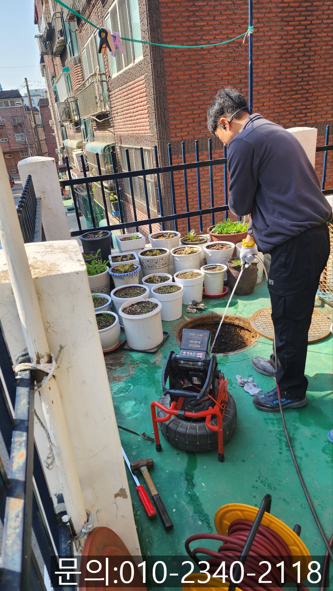
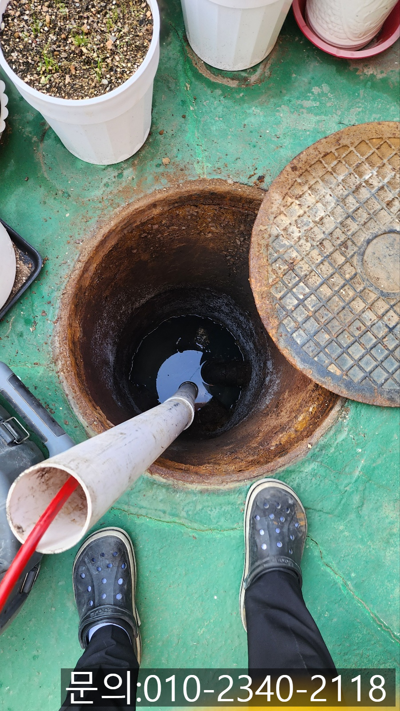
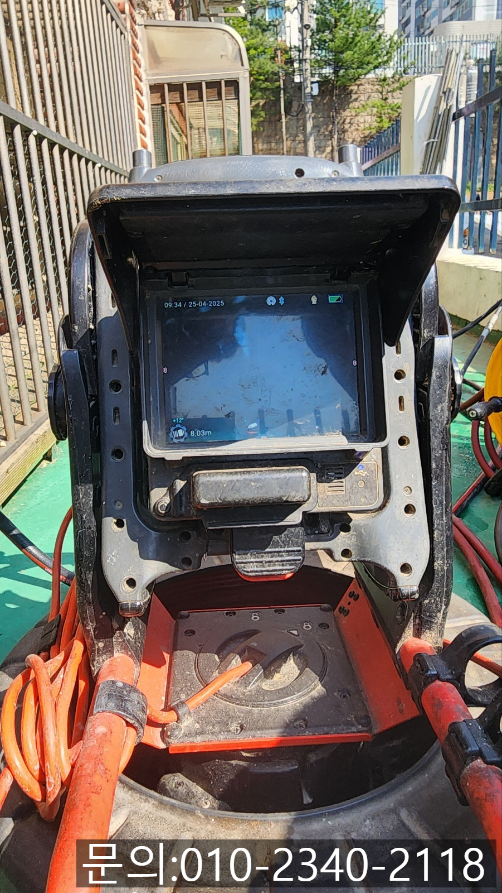
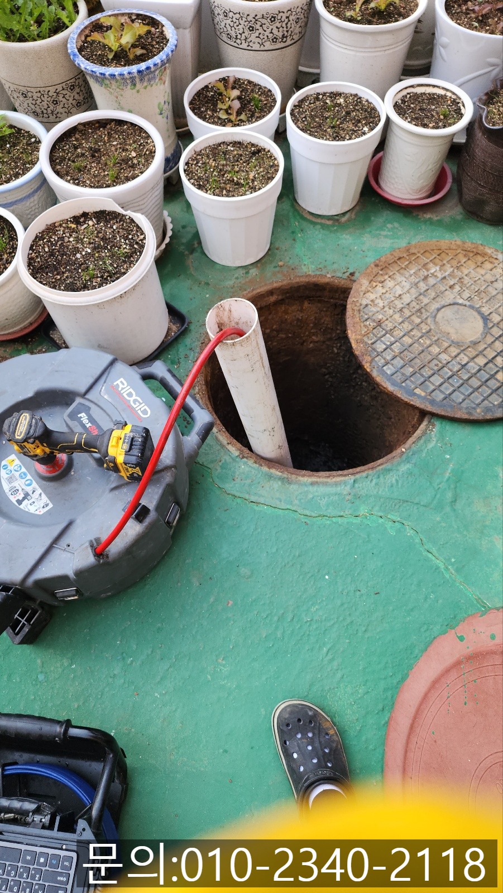
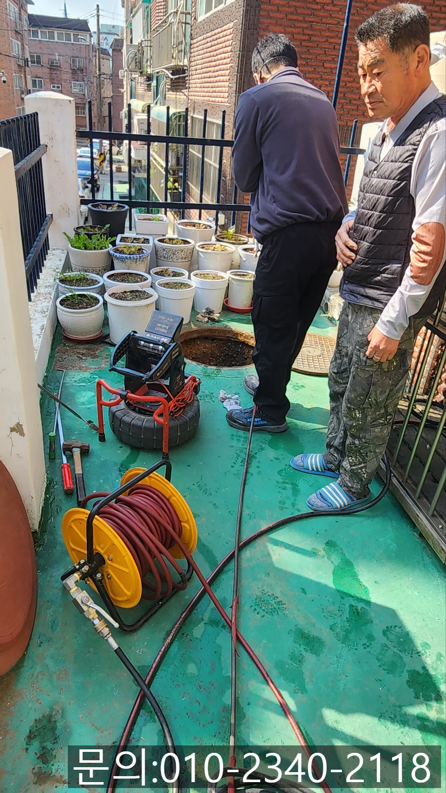
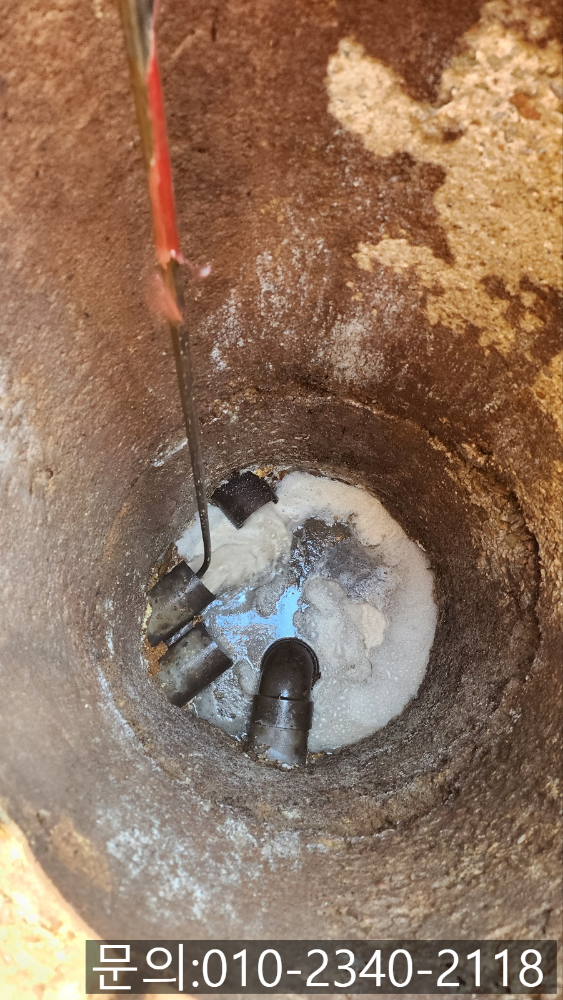

🏠 단월동 하수구 막힘 이천시 사음동 빌라 하수관 막혔을 때 뚫어주는 곳
용인 싱크대막힘 전문 시공 후기

📋 작업 개요
- 위치: 용인
- 서비스 유형: 싱크대막힘, 하수구막힘, 배관막힘, 맨홀막힘, 역류해결, 뚫는업체, 배관청소, 고압세척
- 작업 일시: 2025. 5. 8. 9:20
- 업체명: 하수구수사대 (010-5615-2118)
🔍 문제 상황
안녕하세요.
단월동 하수구 막힘, 이천시 사음동 빌라 하수관 막혔을 때 뚫어주는 곳 하수구 다큐입니다.
아파트나 빌라 같은 공동주택 하수구에서 갑자기 역류하는 현상이 발생하게 되면 정말 당황스럽습니다.
화장실에서 물을 사용하지 않았는데 욕실 바닥에 고인 물을 발견한다거나, 싱크대에서 음식 재료를 다듬는데 꾸르륵 소리와 함께 이물질이 섞인 물이 역류해 올라온 경험 한 번쯤 있으시죠?
빌라나 아파트처럼 여러 사람이 거주하는 공동 주택에 거주하시는 분들이라면 한 번쯤 겪었거나, 이웃 세대에서 발생한 문제가 본인 집에도 영향을 미친 적이 있을 거예요.
아무래도 한 건물 내에서 배관을 공유하는 구조이다 보니 하수구에 문제가 없었던 세대에서도 이웃 세대의 문제로 인해 갑작스레 발생할 수 있습니다.
내가 잘못한 것도 없는데 갑자기 하수구에서 역류하고 악취가 진동한다면? 상상만 해도 정말 끔찍하죠.
공동 주택의 하수구 역류는 단순히 물이 안 빠지는 문제가 아니라 악취, 위생 문제, 이웃 간의 갈등으로까지 이어질 수 있는 심각한 문제로 전문가의 도움을 받아 신속하게 해결해야 합니다.

🔎 원인 분석
💡 전문가 진단: 정밀 진단 장비를 사용하여 슬러지의 고착 여부를 판명하고 타격/세척 작업을 실시했습니다.
오늘 소개해 드릴 단월동 하수구 막힘 현장 물을 사용하지 않았는데도 화장실 바닥에서 역류한다는 연락을 받고 현장으로 달려갔습니다.
필요한 장비를 챙겨 현장에 도착해 보니 말씀해 주셨던 것처럼 화장실 바닥에서 물을 사용하지 않아도 역류하고 있는 상태였어요.
이런 경우는 앞서 말씀드렸던 것처럼 건물에서 같이 사용하고 있는 공용 배관의 문제이다 보니 건물 밖으로 연결되어 있는 배관을 찾아 원인을 파악해 보기로 했습니다.
다행인 건지 이천시 사음동 빌라 하수관 막혔을 때 종종 업체를 섭외해 뚫어보신 경험이 있으시다 보니 문제의 배관을 알려주셔서 어렵지 않게 작업을 시작할 수 있었어요.
건물 밖으로 연결되어 있는 배관으로 내시경 카메라를 진입시켜 막힘의 원인을 파악해 보기로 했습니다.
맨홀 안쪽 배관으로 파이프를 연결해 길을 만들어준 다음 내시경 카메라를 진입시켜 내부를 살펴봤는데요.
사진에서는 잘 보이지 않지만 기름 슬러지로 꽉 차있는 상태였습니다.
이천시 사음동 빌라 하수관 막혔을 때 뚫어주는 곳 하수구 다큐는 고객님께 막힘의 원인에 대해 설명해 드리고 플렉스 샤프트 장비를 사용해 기름 슬러지를 제거하기로 했어요.

🔧 작업 과정
플렉스 샤프트는 노즐 끝에 달려있는 강력한 체인이 배관 내부에서 회전하면서 이물질을 타격해 제거하는 작업을 하게 되는데요.
이번 현장의 경우 플렉스 샤프트를 사용해도 이물질이 꿈쩍하지 않아 어쩔 수 없이 고압세척을 진행하기로 했습니다.
고압세척 장비는 차량에 설치되어 있는 물탱크에 물을 채운 다음 짧은 시간 동안 많은 양의 물을 쏟아내 배관에 쌓인 이물질을 밀어내 주는 작업을 하게 되는데요.
고압의 물을 이용해 배관 청소를 하다 보니 넓고, 큰 배관에 쌓인 많은 양의 기름 슬러지를 제거하는데 탁월한 장비로 현존하는 배관 청소 장비 중 최고라고 자부합니다.
물탱크에 물을 채운 다음 고압세척 장비를 작동시키자 배관에 쌓여있던 기름 슬러지와 각종 이물질이 물과 함께 쏟아져 나오기 시작합니다.
딱딱하게 굳어 배관을 막고 있던 기름 슬러지 덩어리는 뜰채를 이용해 건져 올려주는 작업도 함께 진행해 줬어요.
내시경 카메라를 이용해 기름 슬러지와 이물질의 위치를 파악하고 고압세척 작업을 진행하고 이물질을 건져 올리는 작업을 반복해서 진행해 줬어요.
3년 만에 배관 청소를 하신다고 말씀해 주셨는데요.
그동안 건물에서 흘려보낸 이물질이 상당했습니다.
한참을 반복해서 작업한 끝에 깨끗해진 배관 내부를 확인할 수 있었습니다.
배관 청소를 모두 마치고 잔여 이물질은 없는지 고객님과 함께 꼼꼼하게 내시경으로 확인해 드렸고요.
역류 현상이 나타났던 가정집에도 문제없이 통수되는지 테스트까지 마친 다음 장비를 챙겨 철수할 수 있었습니다.
여러 세대가 거주하는 공동주택의 경우 배관을 같이 사용하다 보니 평소에 관리를 잘해도 이웃 세대로 인해 막힘이나 역류가 발생할 수 있습니다.


✅ 작업 완료
공용 배관의 경우 셀프로는 뚫기 불가능하기 때문에 꼭 전문가의 도움을 받아 해결하셔야 해요.
지금 하수구 막힘으로 고민하고 계시나요?
하수구 다큐로 연락 주세요.
끝까지 해결해 드리겠습니다.




⚠️ 주방 싱크대 배관 막힘 예방 수칙
- ✅ 기름기가 묻은 식기나 프라이팬은 설거지 전 키친타올로 반드시 기름때를 닦아내세요.
- ✅ 주기적으로 싱크대 개수대에 뜨거운 물을 가득 받아 한 번에 내려 배관 내부 기름을 씻어내세요.
- ✅ 배수구 거름망을 미세한 필터로 사용하시고 음식물 찌꺼기가 틈으로 새어 들지 않게 관리하세요.
- ✅ 베이킹소다와 식초를 뜨거운 물과 함께 일주일에 한 번씩 부어주면 배관 살균과 막힘 예방에 좋습니다.
💡 핵심 정리
- 확실한 장비 작업(내시경 점검 및 샤프트 스케일링)으로 원인을 뿌리 뽑습니다.
- 작업 후 1년 이내에 동일한 부위 재발 시 100% 무상 A/S 서비스를 보장합니다.
- 서울 · 경기 · 인천 전 지역에 24시간 언제든 긴급 출동할 수 있도록 항시 대기 중입니다.
❓ 자주 묻는 질문 (FAQ)
🚨 용인 싱크대막힘 문제로 고민이신가요?
정확한 원인 진단과 확실한 시공으로 재발 없는 해결을 약속드립니다.
24시간 긴급 출동 | 서울 · 경기 · 인천 전지역 | 1년 내 재발 시 무상 A/S